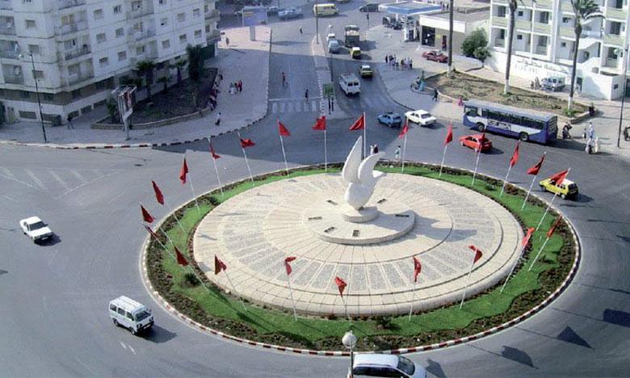
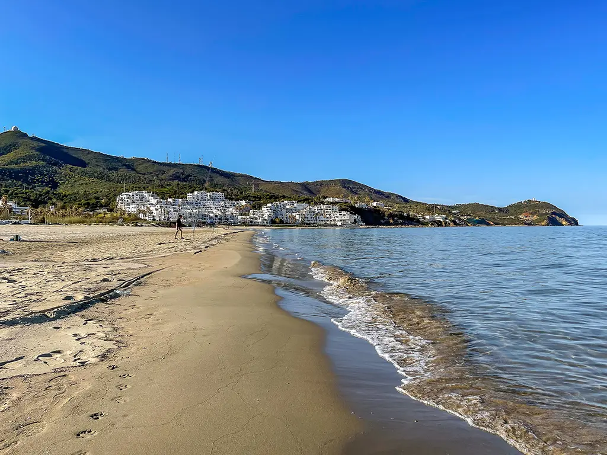
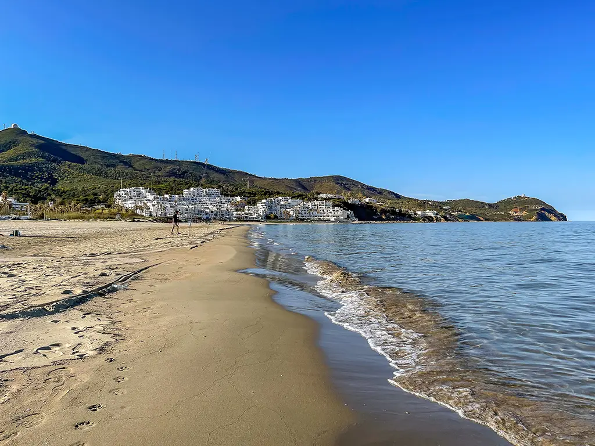
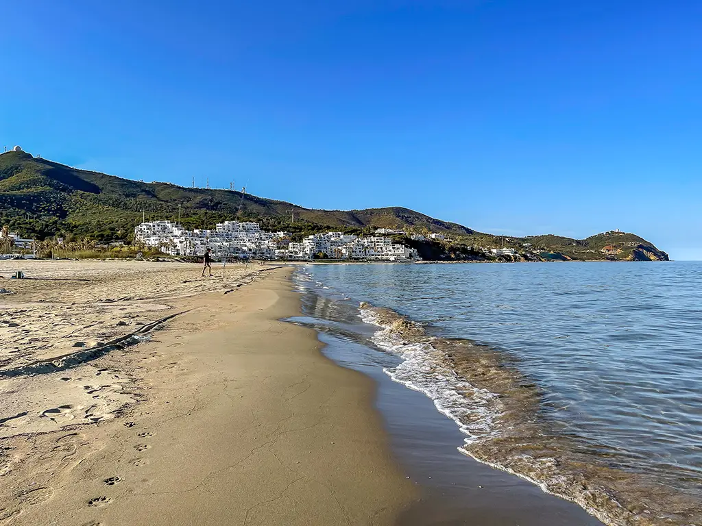

Tetouan, ville marocaine située au pied des montagnes du Rif, est une perle culturelle et historique. Fondée au IIIe siècle avant notre ère , elle offre un riche patrimoine andalou et maure, avec sa médina classée au patrimoine mondial de l'UNESCO, sa kasbah du XVIIIe siècle et son musée d'art moderne. La ville séduit également par ses plages méditerranéennes, son agriculture verdoyante et sa cuisine locale savoureuse, mêlant traditions marocaines et influences espagnoles.
La Colombe Blanche de : un voyage culture Tétouan
Tétouan, surnommée "la Colombe Blanche", est une ville marocaine au riche patrimoine historique et culturel, située au pied des montagnes du Rif. Mélangeant influences andalouses, arabes et berbères, sa médina classée au patrimoine mondial de l'UNESCO est un dédale de ruelles où l'artisanat local, tel que le cuir et la poterie, perpétue des traditions anciennes. L'architecture blanche de ses maisons, agrémentée de touches de bleu, reflète une atmosphère paisible, tandis que l'Académie royale des beaux-arts souligne son rôle en tant que carrefour culturel entre l'Orient et l'Occident.

Tétouan : Une Destination Entre Mer et Montagnes
située au pied des montagnes du Rif et baignée par la mer Méditerranée, Tétouan bénéficie d'un emplacement privilégié qui en fait une destination idéale pour les amoureux de nature et d'histoire.

Histoire de Tétouan
Tétouan, fondée au VIIIe siècle, a connu diverses périodes d'occupation, notamment les Phéniciens, les Romains, les Arabes et les Espagnols. Cette histoire complexe se reflète dans son patrimoine architectural et culturel, faisant de Tétouan une ville fascinante.
 
